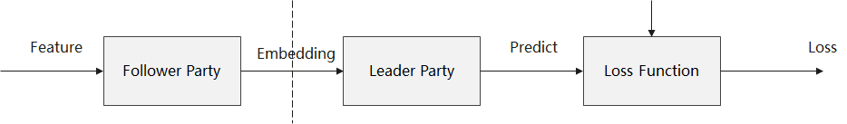
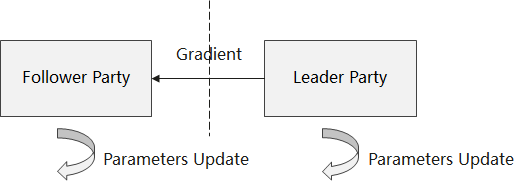
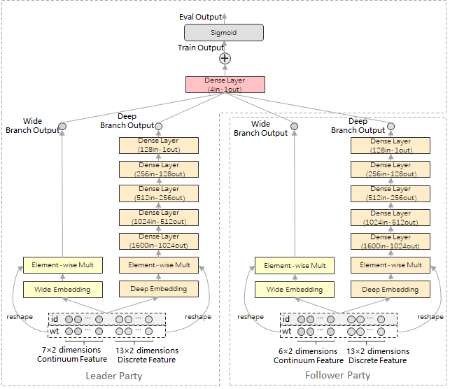

Vertical Federated Learning Model Training - Wide&Deep Recommendation Application

Overview
MindSpore Federated provides a vertical federated learning infrastructure component based on Split Learning.
Vertical FL model training scenarios: including two stages of forward propagation and backward propagation/parameter update.
Forward propagation: After the data intersection module processes the parameter-side data and aligns the feature information and label information, the Follower participant inputs the local feature information into the precursor network model, and the feature tensor output from the precursor network model is encrypted/scrambled by the privacy security module and transmitted to the Leader participant by the communication module. The Leader participants input the received feature tensor into the post-level network model, and the predicted values and local label information output from the post-level network model are used as the loss function input to calculate the loss values.

Backward propagation: The Leader participant calculates the parameter gradient of the backward network model based on the loss value, trains and updates the parameters of the backward network model, and transmits the gradient tensor associated with the feature tensor to the Follower participant by the communication module after encrypted and scrambled by the privacy security module. The Follower participant uses the received gradient tensor for training and update of of frontward network model parameters.

Vertical FL model inference scenario: similar to the forward propagation phase of the training scenario, but with the predicted values of the backward network model directly as the output, without calculating the loss values.
Network and Data

This sample provides a federated learning training example for recommendation-oriented tasks by using Wide&Deep network and Criteo dataset as examples. As shown above, in this case, the vertical federated learning system consists of the Leader participant and the Follower participant. Among them, the Leader participant holds 20×2 dimensional feature information and label information, and the Follower participant holds 19×2 dimensional feature information. Leader participant and Follower participant deploy 1 set of Wide&Deep network respectively, and realize the collaborative training of the network model by exchanging embedding vectors and gradient vectors without disclosing the original features and label information.
For a detailed description of the principle properties of Wide&Deep networks, see MindSpore ModelZoo - Wide&Deep - Wide&Deep Overview and its research paper.
Dataset Preparation
This sample is based on the Criteo dataset for training and testing. Before running the sample, you need to refer to MindSpore ModelZoo - Wide&Deep - Quick Start to pre-process the Criteo dataset.
Clone MindSpore ModelZoo code.
git clone https://gitee.com/mindspore/models.git -b r2.0 cd models/official/recommend/Wide_and_Deep
Download the dataset
mkdir -p data/origin_data && cd data/origin_data wget http://go.criteo.net/criteo-research-kaggle-display-advertising-challenge-dataset.tar.gz tar -zxvf criteo-research-kaggle-display-advertising-challenge-dataset.tar.gz
Use this script to pre-process the data. The preprocessing process may take up to an hour and the generated MindRecord data is stored in the data/mindrecord path. The preprocessing process consumes a lot of memory, so it is recommended to use a server.
cd ../.. python src/preprocess_data.py --data_path=./data/ --dense_dim=13 --slot_dim=26 --threshold=100 --train_line_count=45840617 --skip_id_convert=0
Quick Experience
This sample runs as a Shell script pulling up a Python program.
Refer to MindSpore website guidance, installing MindSpore 1.8.1 or higher.
Use to install the Python libraries that MindSpore Federated depends on.
cd federated python -m pip install -r requirements_test.txt
Copy the Criteo dataset after preprocessing to this directory.
cd tests/example/splitnn_criteo cp -rf ${DATA_ROOT_PATH}/data/mindrecord/ ./
Run the sample program to start the script.
# start leader: bash run_vfl_train_leader.sh 127.0.0.1:10087 127.0.0.1:10086 /path/to/data_set False # start follower: bash run_vfl_train_follower.sh 127.0.0.1:10086 127.0.0.1:10087 /path/to/data_set False
or
# Start the leader process with https encrypted communication: bash run_vfl_train_leader.sh 127.0.0.1:10087 127.0.0.1:10086 /path/to/data_set True server_cert_password client_cert_password /path/to/server_cert /path/to/client_cert /path/to/ca_cert # Start the follower process using https encrypted communication: bash run_vfl_train_follower.sh 127.0.0.1:10086 127.0.0.1:10087 /path/to/data_set True server_cert_password client_cert_password /path/to/server_cert /path/to/client_cert /path/to/ca_cert
View training log
log_local_gpu.txt.INFO:root:epoch 0 step 100/2582 wide_loss: 0.528141 deep_loss: 0.528339 INFO:root:epoch 0 step 200/2582 wide_loss: 0.499408 deep_loss: 0.499410 INFO:root:epoch 0 step 300/2582 wide_loss: 0.477544 deep_loss: 0.477882 INFO:root:epoch 0 step 400/2582 wide_loss: 0.474377 deep_loss: 0.476771 INFO:root:epoch 0 step 500/2582 wide_loss: 0.472926 deep_loss: 0.475157 INFO:root:epoch 0 step 600/2582 wide_loss: 0.464844 deep_loss: 0.467011 INFO:root:epoch 0 step 700/2582 wide_loss: 0.464496 deep_loss: 0.466615 INFO:root:epoch 0 step 800/2582 wide_loss: 0.466895 deep_loss: 0.468971 INFO:root:epoch 0 step 900/2582 wide_loss: 0.463155 deep_loss: 0.465299 INFO:root:epoch 0 step 1000/2582 wide_loss: 0.457914 deep_loss: 0.460132 INFO:root:epoch 0 step 1100/2582 wide_loss: 0.453361 deep_loss: 0.455767 INFO:root:epoch 0 step 1200/2582 wide_loss: 0.457566 deep_loss: 0.459997 INFO:root:epoch 0 step 1300/2582 wide_loss: 0.460841 deep_loss: 0.463281 INFO:root:epoch 0 step 1400/2582 wide_loss: 0.460973 deep_loss: 0.463365 INFO:root:epoch 0 step 1500/2582 wide_loss: 0.459204 deep_loss: 0.461563 INFO:root:epoch 0 step 1600/2582 wide_loss: 0.456771 deep_loss: 0.459200 INFO:root:epoch 0 step 1700/2582 wide_loss: 0.458479 deep_loss: 0.460963 INFO:root:epoch 0 step 1800/2582 wide_loss: 0.449609 deep_loss: 0.452122 INFO:root:epoch 0 step 1900/2582 wide_loss: 0.451775 deep_loss: 0.454225 INFO:root:epoch 0 step 2000/2582 wide_loss: 0.460343 deep_loss: 0.462826 INFO:root:epoch 0 step 2100/2582 wide_loss: 0.456814 deep_loss: 0.459201 INFO:root:epoch 0 step 2200/2582 wide_loss: 0.452091 deep_loss: 0.454555 INFO:root:epoch 0 step 2300/2582 wide_loss: 0.461522 deep_loss: 0.464001 INFO:root:epoch 0 step 2400/2582 wide_loss: 0.442355 deep_loss: 0.444790 INFO:root:epoch 0 step 2500/2582 wide_loss: 0.450675 deep_loss: 0.453242 ...
Close training process.
pid=`ps -ef|grep run_vfl_train_socket |grep -v "grep" | grep -v "finish" |awk '{print $2}'` && for id in $pid; do kill -9 $id && echo "killed $id"; done
Deep Experience
Before starting the vertical federated learning training, users need to construct the dataset iterator and network structure as they do for normal deep learning training with MindSpore.
Building the Dataset
The current simulation process is used, i.e., both participants read the same data source. But for training, both participants use only part of the feature or label data, as shown in Network and Data. Later, the Data Access method will be used for both participants to import the data individually.
from run_vfl_train_local import construct_local_dataset
ds_train, _ = construct_local_dataset()
train_iter = ds_train.create_dict_iterator()
Building the Network
Leader participant network:
from wide_and_deep import WideDeepModel, BottomLossNet, LeaderTopNet, LeaderTopLossNet, LeaderTopEvalNet, \
LeaderTeeNet, LeaderTeeLossNet, LeaderTopAfterTeeNet, LeaderTopAfterTeeLossNet, LeaderTopAfterTeeEvalNet, \
AUCMetric
from network_config import config
# Leader Top Net
leader_top_base_net = LeaderTopNet()
leader_top_train_net = LeaderTopLossNet(leader_top_base_net)
...
# Leader Bottom Net
leader_bottom_eval_net = leader_bottom_base_net = WideDeepModel(config, config.leader_field_size)
leader_bottom_train_net = BottomLossNet(leader_bottom_base_net, config)
Follower participant network:
from wide_and_deep import WideDeepModel, BottomLossNet
from network_config import config
follower_bottom_eval_net = follower_base_net = WideDeepModel(config, config.follower_field_size)
follower_bottom_train_net = BottomLossNet(follower_base_net, config)
Vertical Federated Communication Base
Before training, we first have to start the communication base to make Leader and Follower participants group network. Detailed API documentation can be found in Vertical Federated Communicator.
Both parties need to import the vertical federated communicator:
from mindspore_federated.startup.vertical_federated_local import VerticalFederatedCommunicator, ServerConfig
Leader participant communication base:
http_server_config = ServerConfig(server_name='leader', server_address=config.http_server_address)
remote_server_config = ServerConfig(server_name='follower', server_address=config.remote_server_address)
self.vertical_communicator = VerticalFederatedCommunicator(http_server_config=http_server_config,
remote_server_config=remote_server_config,
compress_configs=compress_configs)
self.vertical_communicator.launch()
Follower participant communication base:
http_server_config = ServerConfig(server_name='follower', server_address=config.http_server_address)
remote_server_config = ServerConfig(server_name='leader', server_address=config.remote_server_address)
self.vertical_communicator = VerticalFederatedCommunicator(http_server_config=http_server_config,
remote_server_config=remote_server_config,
compress_configs=compress_configs)
self.vertical_communicator.launch()
Building a Vertical Federated Network
Users need to use the classes provided by MindSpore Federated to wrap their constructed networks into a vertical federated network. The detailed API documentation can be found in Vertical Federated Training Interface.
Both parties need to import the vertical federated training interface:
from mindspore_federated import FLModel, FLYamlData
Leader participant vertical federated network:
leader_bottom_yaml_data = FLYamlData(config.leader_bottom_yaml_path)
leader_top_yaml_data = FLYamlData(config.leader_top_yaml_path)
...
self.leader_top_fl_model = FLModel(yaml_data=leader_top_yaml_data,
network=leader_top_train_net,
metrics=self.eval_metric,
eval_network=leader_top_eval_net)
...
self.leader_bottom_fl_model = FLModel(yaml_data=leader_bottom_yaml_data,
network=leader_bottom_train_net,
eval_network=leader_bottom_eval_net)
Follower participant vertical federated network:
follower_bottom_yaml_data = FLYamlData(config.follower_bottom_yaml_path)
...
self.follower_bottom_fl_model = FLModel(yaml_data=follower_bottom_yaml_data,
network=follower_bottom_train_net,
eval_network=follower_bottom_eval_net)
Vertical Training
For the process of vertical training, refer to overview.
Leader participant training process:
for epoch in range(config.epochs):
for step, item in enumerate(train_iter):
leader_embedding = self.leader_bottom_fl_model.forward_one_step(item)
item.update(leader_embedding)
follower_embedding = self.vertical_communicator.receive("follower")
...
leader_out = self.leader_top_fl_model.forward_one_step(item, follower_embedding)
grad_scale = self.leader_top_fl_model.backward_one_step(item, follower_embedding)
scale_name = 'loss'
...
grad_scale_follower = {scale_name: OrderedDict(list(grad_scale[scale_name].items())[2:])}
self.vertical_communicator.send_tensors("follower", grad_scale_follower)
grad_scale_leader = {scale_name: OrderedDict(list(grad_scale[scale_name].items())[:2])}
self.leader_bottom_fl_model.backward_one_step(item, sens=grad_scale_leader)
Follower participant training process:
for _ in range(config.epochs):
for _, item in enumerate(train_iter):
follower_embedding = self.follower_bottom_fl_model.forward_one_step(item)
self.vertical_communicator.send_tensors("leader", follower_embedding)
scale = self.vertical_communicator.receive("leader")
self.follower_bottom_fl_model.backward_one_step(item, sens=scale)